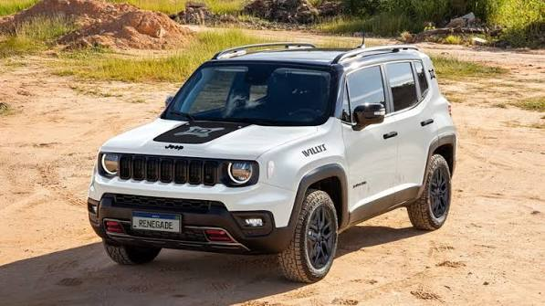

Hotel Alpenhaus & Spa
🏨 Hotelería (Bariloche)
Ubicado en la costa del Lago Nahuel Huapi. Incluye desayuno artesanal buffet, acceso libre al circuito de spa y piscina climatizada.
$85.000 / noche
Explorá nuestra oferta de hospedajes de montaña, excursiones guiadas y unidades de movilidad disponibles en el sur argentino.
🏨 Hotelería (Bariloche)
Ubicado en la costa del Lago Nahuel Huapi. Incluye desayuno artesanal buffet, acceso libre al circuito de spa y piscina climatizada.
$85.000 / noche

🪵 Alojamiento (San Martín de los Andes)
Inmersas en un bosque nativo de coihues. Cabañas rústicas de piedra y madera equipadas para hasta 5 personas, con hogar a leña, parrilla individual y servicio de mucama.
$65.000 / noche

🏔️ Alojamiento (Ushuaia)
Departamentos céntricos con vista al Canal Beagle. Cuentan con cocina totalmente equipada, losa radiante, ventanales termopanel y Wi-Fi de alta velocidad.
$50.000 / noche

🛏️ Alojamiento (El Chaltén)
Punto de partida ideal para escaladores y senderistas. Habitaciones compartidas y privadas, cocina comunitaria, zona de guardado de equipos y fogón exterior.
$35.000 / noche

🗺️ Excursión Guiada (Bariloche)
Ascenso acompañado por guía profesional por senderos de montaña. Incluye bastones técnicos y seguro de asistencia en ruta.
$25.000 / persona

⛵ Excursión Lacustre (Bariloche)
Zarpe desde Puerto Pañuelo para recorrer los históricos bosques de arrayanes centenarios y la historia geológica de la Isla Victoria.
$45.000 / persona

🧊 Aventura en Hielo (El Calafate)
Experiencia única dentro del Parque Nacional Los Glaciares. Incluye travesía en barco, caminata con crampones de acero sobre el glaciar y recorrido por pasarelas panorámicas.
$95.000 / persona

🍺 Ocio & Gastronomía (Bariloche)
Recorrido nocturno por las microcervecerías artesanales más emblemáticas del circuito. Incluye degustación guiada, maridaje y cena tradicional de cordero patagónico al asador.
$30.000 / persona

🚗 Vehículo Compacto
Sedán moderno motor 1.3 económico. Cuenta con baúl espacioso de 525 l, aire acondicionado, dirección asistida, frenos ABS, seguro básico y kilometraje libre.
$40.000 / día

🚙 SUV Mediana
Excelente posición de manejo y despeje del suelo superior. Ideal para rutas y tramos cordilleranos con máximo confort y seguridad.
$55.000 / día

🛻 Camioneta 4x4
Tracción integral con caja reductora (alta y baja). Equipada con neumático All-Terrain, cadenas para nieve homologadas y enganche de auxilio para ripio duro.
$75.000 / día

🏍️ Aventura en Dos Ruedas
Agilidad y ligereza para recorrer caminos rurales y de montaña. Incluye casco homologado, guantes de protección y soporte para GPS en manillar.
$30.000 / día